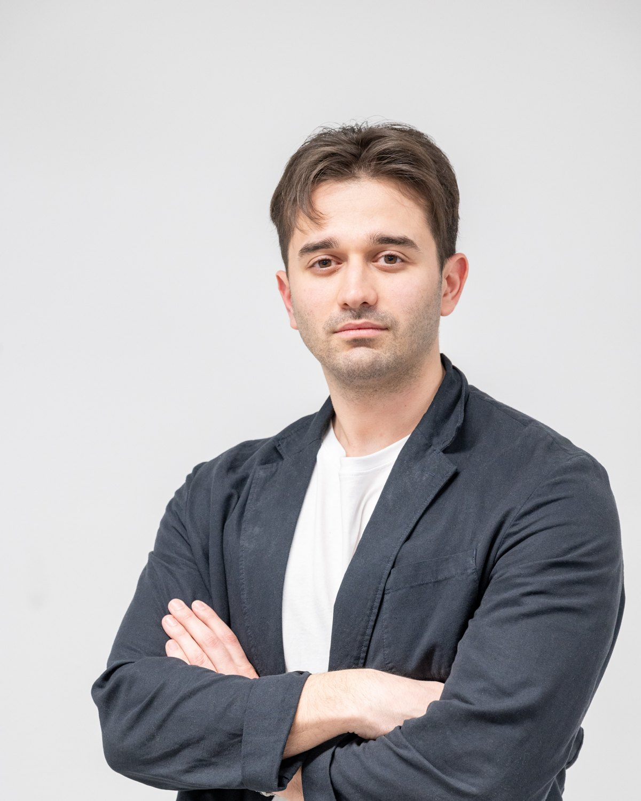
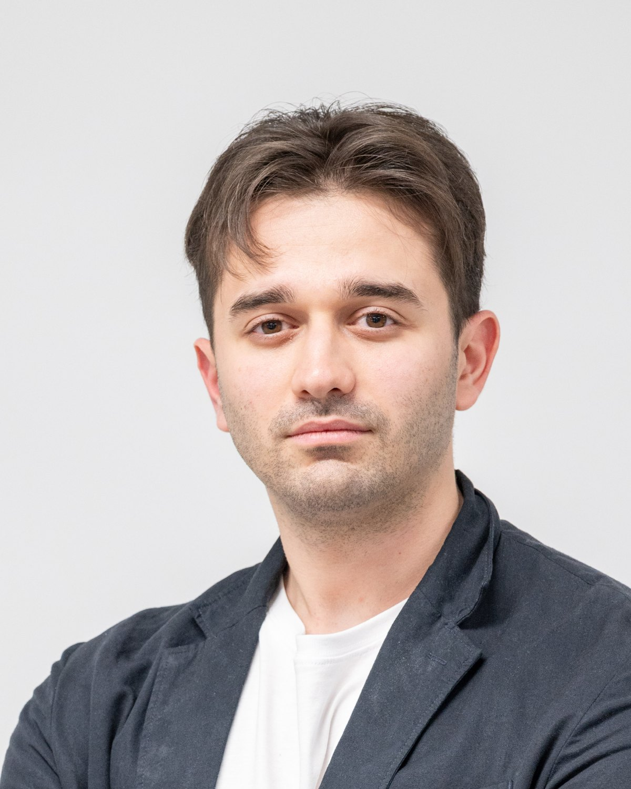

Based in Milano, IT
Doctor of Philosophy in Electrical Engineering · Lecturer · AI Expert · Politecnico di Milano
Marios Saleptsis
Electrical engineer working on forecasting, optimization and decision-focused learning for microgrids and battery energy storage.


About
In short
I am a final-year PhD candidate in Electrical Engineering at Politecnico di Milano, in the Microgrids and Machine Learning Laboratory (MG²Lab). My thesis, Cost-Aware and Decision-Focused Forecasting for Battery Energy Storage Scheduling in Microgrids, answers it with cost-aware loss functions, decision-focused learning trained through the dispatch optimizer, regret guarantees for the online case, game-theoretic coordination of forecasters, risk-averse training and a shadow-price diagnostic for forecast errors.
Before Milan I studied Electrical and Computer Engineering at the University of Western Macedonia, with an Erasmus semester at Universidad Politécnica de Madrid. I have designed and commissioned photovoltaic plants in Greece, managed Horizon Europe projects on renewable energy, and led the forecasting division of DomOpti, a Politecnico di Milano spin-off. In 2025 and 2026 I spent a research semester at Polytechnique Montréal working on end-to-end learning for energy systems. At PoliMi I also teach master-level courses on circuits and electric energy conversion.
Path
2016 to today
- 2016Diploma in Electrical and Computer Engineering, University of Western Macedonia
- 2020Electrical Project Engineer, EcoEnergy SA
- 2021Erasmus semester, Universidad Politécnica de Madrid
- 2023EU Project Manager, Cluster of Bioeconomy and Environment
- 2023PhD, MG²Lab, Politecnico di Milano
- 2025Teaching Assistant, Politecnico di Milano
- 2025Visiting Researcher, Polytechnique Montréal
If a forecast exists to drive a battery schedule, why train it to minimize squared error?
Expertise
What I work on
Decision-focused learning
Training forecasters through the optimization problem they feed, so that accuracy is measured in operating cost. Offline, online with regret guarantees, multi-forecaster and risk-averse variants.
Energy forecasting
Point and probabilistic forecasting of PV generation, load and electricity prices with gradient boosting, neural networks, conformal prediction and Gaussian processes.
Microgrid optimization
Battery and EV-charging scheduling as LP and MILP problems, stochastic and reserve-constrained dispatch, sensitivity analysis through duality and multiparametric programming.
PV systems
Plant engineering background and data-driven monitoring of photovoltaic fleets, including peer-based probabilistic performance assessment.
Applied machine learning
Python, PyTorch, TensorFlow, XGBoost, CVXPY, Pyomo and Gurobi, with Docker, Grafana and time-series databases for deployed forecasting pipelines.
Research and project management
Horizon Europe projects MOST, MESSI and NEST, coordination of cross-national consortia, and validation on the MG²Lab microgrid testbed.
Contact
Get in touch
marios.saleptsis@polimi.it
Politecnico di Milano · Department of Energy · Via Lambruschini 4, 20156 Milano, Italy